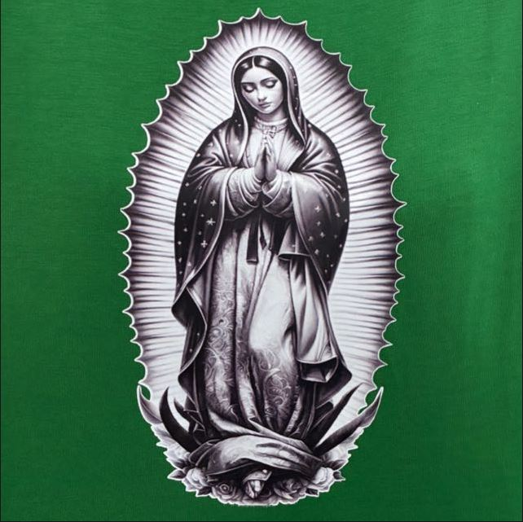

<!DOCTYPE html>
<html lang="pt-br">

<head>
    <meta charset="UTF-8">
    <meta name="viewport" content="width=device-width, initial-scale=1.0">
    <title>TLC Itapecerica | Experiência Interativa</title>

    <script src="https://cdn.tailwindcss.com"></script>
    <script type="module" src="https://unpkg.com/ionicons@7.1.0/dist/ionicons/ionicons.esm.js"></script>
    <link rel="preconnect" href="https://fonts.googleapis.com">
    <link rel="preconnect" href="https://fonts.gstatic.com" crossorigin>
    <link href="https://fonts.googleapis.com/css2?family=Inter:wght@400;500;700;800&display=swap" rel="stylesheet">
    <link rel="stylesheet" href="https://unpkg.com/swiper/swiper-bundle.min.css" />

    <style>
        body {
            font-family: 'Inter', sans-serif;
            overflow: hidden;
            /* Previne a rolagem do body */
        }

        /* Fundo Vivo e Dinâmico */
        #background-orb {
            position: fixed;
            top: 0;
            left: 0;
            width: 100vw;
            height: 100vh;
            background: radial-gradient(circle at center, rgba(251, 146, 60, 0.15), transparent 40%);
            transition: transform 0.2s ease-out;
            z-index: -1;
        }

        /* Estilo do Sidebar e seus Itens */
        .sidebar-item .tooltip {
            visibility: hidden;
            opacity: 0;
            transform: translateX(-10px);
            transition: all 0.3s ease-in-out;
        }

        .sidebar-item:hover .tooltip {
            visibility: visible;
            opacity: 1;
            transform: translateX(0);
        }

        .sidebar-item.active ion-icon {
            color: white;
        }

        .sidebar-item.active .icon-background {
            transform: scale(1);
            opacity: 1;
        }

        /* Estilo das Seções de Conteúdo */
        .content-section {
            position: absolute;
            top: 0;
            left: 0;
            width: 100%;
            height: 100%;
            opacity: 0;
            visibility: hidden;
            transition: opacity 0.6s ease-in-out, visibility 0.6s ease-in-out;
            overflow-y: auto;
            /* Permite rolagem dentro da seção */
            padding-left: 80px;
            /* Espaço para o sidebar */
        }

        .content-section.active {
            opacity: 1;
            visibility: visible;
        }

        /* Animação de entrada para elementos internos */
        .content-section.active .animate-in {
            animation: fadeIn_Up 0.8s ease-out forwards;
        }

        /* ... dentro da sua tag <style> no <head> ... */
        .swiper-slide {
            width: 80%;
            max-width: 400px;
        }

        .swiper-slide .transform {
            transform: scale(0.8);
        }

        .swiper-slide-active .transform {
            transform: scale(1);
        }

        .swiper-pagination-bullet {
            background: #6b7280;
            /* cinza */
        }

        .swiper-pagination-bullet-active {
            background: #f87171 !important;
            /* vermelho */
        }

        /* Estilos da Agenda Interativa */
        .timeline-item {
            position: relative;
            padding-left: 4rem;
            /* Espaço para o ícone e a linha */
            padding-bottom: 3rem;
        }

        .timeline-item:last-child {
            padding-bottom: 0;
        }

        .timeline-item::before {
            content: '';
            position: absolute;
            left: 28px;
            /* Centraliza a linha no ícone */
            top: 56px;
            /* Começa abaixo do ícone */
            height: calc(100% - 56px);
            width: 3px;
            background-color: #374151;
            /* bg-gray-700 */
        }

        .timeline-item:last-child::before {
            display: none;
            /* Remove a linha do último item */
        }

        .timeline-item-button.active {
            border-color: #a78bfa;
            /* border-violet-400 */
            background-color: #374151;
            /* bg-gray-700 */
        }

        .details-panel {
            max-height: 0;
            overflow: hidden;
            transition: max-height 0.5s ease-in-out, padding-top 0.5s ease-in-out, margin-top 0.5s ease-in-out;
            padding-top: 0;
            margin-top: 0;
        }

        .details-panel.open {
            max-height: 500px;
            /* Altura suficiente para o conteúdo */
            padding-top: 1rem;
            margin-top: 1rem;
        }

        @for $i from 1 through 5 {
            .content-section.active .animate-in:nth-child(#{$i}) {
                animation-delay: #{$i * 0.15}s;
            }
        }

        @keyframes fadeIn_Up {
            from {
                opacity: 0;
                transform: translateY(30px);
            }

            to {
                opacity: 1;
                transform: translateY(0);
            }
        }
    </style>
</head>

<body class="bg-gray-900 text-white">

    <div id="background-orb"></div>

    <aside id="sidebar"
        class="fixed top-0 left-0 h-screen w-20 bg-black/30 backdrop-blur-xl border-r border-white/10 flex flex-col items-center py-8 z-20">
        <a href="#" class="mb-10">
            
        </a>
        <ul id="sidebar-nav" class="flex flex-col items-center gap-6">
        </ul>
    </aside>

    <main id="main-content" class="relative w-full h-screen">

    </main>

    <script src="https://unpkg.com/swiper/swiper-bundle.min.js"></script>
    <script>
        document.addEventListener('DOMContentLoaded', () => {

            const App = {
                // --- DADOS DA APLICAÇÃO ---
                sections: [
                    { id: 'inicio', title: 'Início', icon: 'home-outline', color: '#34d399' /* esmeralda */ },
                    { id: 'galeria', title: 'Galeria', icon: 'images-outline', color: '#60a5fa' /* azul */ },
                    { id: 'videos', title: 'Vídeos', icon: 'videocam-outline', color: '#ec4899' }, /* Rosa */
                    { id: 'historias', title: 'Histórias', icon: 'chatbubbles-outline', color: '#f87171' /* vermelho */ },
                    { id: 'agenda', title: 'Agenda', icon: 'calendar-outline', color: '#a78bfa' /* violeta */ },
                    { id: 'contato', title: 'Contato', icon: 'paper-plane-outline', color: '#fbbf24' /* ambar */ }
                ],

                galleryData: [
                    { id: 1, src: 'https://images.unsplash.com/photo-1543269865-cbf427effbad?q=80&w=870', category: 'encontro', title: 'Dinâmica de Grupo' },
                    { id: 2, src: 'https://images.unsplash.com/photo-1524178232363-1fb2b075b655?q=80&w=870', category: 'equipe', title: 'Equipe de Trabalho' },
                    { id: 3, src: 'https://images.unsplash.com/photo-1516222338279-1104b2c1251e?q=80&w=870', category: 'louvor', title: 'Momento de Louvor' },
                    { id: 4, src: 'https://images.unsplash.com/photo-1529303357-142805141353?q=80&w=870', category: 'abraco', title: 'O Abraço em Cristo' },
                    { id: 5, src: 'https://images.unsplash.com/photo-1522202176988-66273c2fd55f?q=80&w=871', category: 'encontro', title: 'Partilha em Grupo' },
                    { id: 6, src: 'https://images.unsplash.com/photo-1556742044-1a9321e2e1b5?q=80&w=870', category: 'equipe', title: 'Servindo com Alegria' },
                    { id: 7, src: 'https://images.unsplash.com/photo-1484712401471-05c7215830eb?q=80&w=870', category: 'louvor', title: 'Coração em Oração' },
                    { id: 8, src: 'https://images.unsplash.com/photo-1527529482837-4698179dc6ce?q=80&w=870', category: 'abraco', title: 'Comunidade Reunida' },
                ],

                // NOVO: Dados para a Galeria de Vídeos
                videoGalleryData: [
                    { id: 1, title: 'O Impacto do TLC', url: 'https://www.youtube.com/embed/I_e5OEfD2jY?si=XDmOpdSKulUfHHAX" title="YouTube video player" frameborder="0" allow="accelerometer; autoplay; clipboard-write; encrypted-media; gyroscope; picture-in-picture; web-share" referrerpolicy="strict-origin-when-cross-origin', thumbnail: 'https://www.youtube.com/watch?v=I_e5OEfD2jY&list=RDI_e5OEfD2jY&start_radio=1' },
                    { id: 2, title: 'Momentos de Louvor e Adoração', url: 'https://www.youtube.com/embed/kyiEboFeDd4?si=PCxt6UWg_aZcQz7m" title="YouTube video player" frameborder="0" allow="accelerometer; autoplay; clipboard-write; encrypted-media; gyroscope; picture-in-picture; web-share" referrerpolicy="strict-origin-when-cross-origin', thumbnail: 'https://img.youtube.com/vi/your_video_id_2/mqdefault.jpg' },
                    { id: 3, title: 'Testemunhos que Transformam', url: 'https://www.youtube.com/embed/7AU4KXimRbY?si=s_kb9mIBB8ugEokO" title="YouTube video player" frameborder="0" allow="accelerometer; autoplay; clipboard-write; encrypted-media; gyroscope; picture-in-picture; web-share" referrerpolicy="strict-origin-when-cross-origin', thumbnail: 'https://img.youtube.com/vi/your_video_id_3/mqdefault.jpg' },
                    // Adicione mais vídeos conforme necessário
                ],
                

                // MODIFICADO: Dados para a Galeria de Vídeos com arquivos locais
                /*
                videoGalleryData: [
                    {
                        id: 1,
                        title: 'O Impacto do TLC',
                        // Caminho para o seu arquivo de vídeo local
                        url: 'videos/impacto-tlc.mp4',
                        // Caminho para a sua imagem de miniatura local
                        thumbnail: 'thumbnails/impacto-tlc.jpg'
                    },
                    {
                        id: 2,
                        title: 'Momentos de Louvor e Adoração',
                        url: 'videos/louvor.mp4',
                        thumbnail: 'thumbnails/louvor.jpg'
                    },
                    {
                        id: 3,
                        title: 'Testemunhos que Transformam',
                        url: 'videos/testemunhos.mp4',
                        thumbnail: 'thumbnails/testemunhos.jpg'
                    },
                ],
                */

                // NOVO: Dados para as Histórias
                storiesData: [
                    { name: 'Juliana Martins', tlc: 'TLC 66', story: 'Nunca imaginei que um fim de semana pudesse mudar tanto a minha perspectiva. O TLC me deu uma família na fé e me mostrou a alegria de servir. Sou eternamente grata.', photo: 'https://images.unsplash.com/photo-1580489944761-15a19d654956?q=80&w=461' },
                    { name: 'Ricardo Alves', tlc: 'TLC 65', story: 'Eu cheguei buscando respostas e saí com um propósito. Foi no serviço, na equipe de trabalho, que eu realmente entendi o que significa ser Igreja. A alegria de se doar é incomparável.', photo: 'https://images.unsplash.com/photo-1507003211169-0a1dd7228f2d?q=80&w=387' },
                    { name: 'Beatriz Costa', tlc: 'TLC 67', story: 'O abraço que recebi no TLC curou feridas que eu nem sabia que existiam. Encontrei um amor e um acolhimento que me transformaram de dentro para fora. É indescritível.', photo: 'https://images.unsplash.com/photo-1494790108377-be9c29b29330?q=80&w=387' },
                    { name: 'Lucas Ferreira', tlc: 'TLC 64', story: 'Como homem, muitas vezes a gente aprende a não demonstrar fraqueza. No TLC, aprendi que na nossa vulnerabilidade encontramos a força de Deus e dos irmãos. Foi libertador.', photo: 'https://images.unsplash.com/photo-1564564321837-a57b7070ac4f?q=80&w=436' },
                ],

                // NOVO: Dados para a Agenda
                agendaData: [
                    { date: '18 AGO, 2025', title: 'Missa Jovem Mensal', details: 'Uma missa especial para a juventude, com cantos animados e um momento de partilha no Salão Paroquial após a celebração. Aberto a todos!', icon: 'musical-notes-outline' },
                    { date: '01 SET, 2025', title: 'Início das Inscrições - 68º TLC', details: 'Fique atento! As inscrições para o próximo TLC abrem às 20h em nosso site. As vagas são limitadas e costumam acabar rápido. Prepare seu coração!', icon: 'create-outline' },
                    { date: '25 SET, 2025', title: 'Encontro de Formação para Equipe', details: 'Reunião preparatória para todos que irão servir no 68º TLC. Essencial para alinharmos corações e mentes para a missão. Local: Auditório do Santuário.', icon: 'school-outline' },
                    { date: '12 OUT, 2025', title: 'Festa da Padroeira - Nossa Senhora Aparecida', details: 'Participação especial do TLC na organização da quermesse e da coroação de Nossa Senhora. Um dia de festa e serviço!', icon: 'sparkles-outline' },
                ],

                init() {
                    this.renderSidebar();
                    this.renderSections();
                    this.addEventListeners();
                    this.initGallery();
                    this.initVideoGallery();
                    this.initStoriesCarousel();
                    this.initAgendaTimeline();
                    this.setActiveSection('inicio');
                    this.initContactForm();
                    this.initBackgroundOrb();
                },

                // =======================================================
                // NOVA FUNÇÃO: initGallery
                // =======================================================
                initGallery() {
                    const filtersContainer = document.getElementById('gallery-filters');
                    const grid = document.getElementById('gallery-grid');
                    const lightbox = document.getElementById('lightbox');
                    const lightboxImage = document.getElementById('lightbox-image');
                    const lightboxTitle = document.getElementById('lightbox-title');
                    const closeLightbox = document.getElementById('close-lightbox');

                    if (!filtersContainer || !grid) return; // Não executa se não estiver na página certa

                    // 1. Criar os itens da galeria
                    this.galleryData.forEach(item => {
                        const div = document.createElement('div');
                        div.className = 'gallery-item group aspect-w-1 aspect-h-1 cursor-pointer overflow-hidden rounded-lg';
                        div.dataset.category = item.category;
                        div.innerHTML = `
                            
                            <div class="absolute inset-0 bg-gradient-to-t from-black/60 to-transparent opacity-0 group-hover:opacity-100 transition-opacity duration-300"></div>
                            <h4 class="absolute bottom-4 left-4 text-white font-bold text-lg opacity-0 transform translate-y-4 group-hover:opacity-100 group-hover:translate-y-0 transition-all duration-300">${item.title}</h4>
                        `;
                        div.addEventListener('click', () => {
                            lightboxImage.src = item.src;
                            lightboxTitle.textContent = item.title;
                            lightbox.classList.remove('hidden');
                            lightbox.classList.add('flex');
                        });
                        grid.appendChild(div);
                    });

                    // 2. Criar os botões de filtro
                    const categories = ['todos', ...new Set(this.galleryData.map(i => i.category))];
                    categories.forEach(cat => {
                        const button = document.createElement('button');
                        button.className = 'filter-btn px-5 py-2 rounded-full font-semibold text-sm transition-all duration-300';
                        button.dataset.filter = cat;
                        button.textContent = cat.charAt(0).toUpperCase() + cat.slice(1);
                        button.addEventListener('click', () => {
                            // Lógica de filtragem
                            document.querySelectorAll('.filter-btn').forEach(btn => {
                                btn.classList.toggle('bg-blue-500', btn.dataset.filter === cat);
                                btn.classList.toggle('text-white', btn.dataset.filter === cat);
                                btn.classList.toggle('bg-gray-700/50', btn.dataset.filter !== cat);
                                btn.classList.toggle('text-gray-300', btn.dataset.filter !== cat);
                            });

                            document.querySelectorAll('.gallery-item').forEach(item => {
                                item.style.transition = 'all 0.4s ease-in-out';
                                if (cat === 'todos' || item.dataset.category === cat) {
                                    item.style.transform = 'scale(1)';
                                    item.style.opacity = '1';
                                    item.style.width = '100%';
                                    item.style.height = 'auto';
                                    item.style.overflow = 'hidden';
                                    item.style.margin = '0';
                                } else {
                                    item.style.transform = 'scale(0)';
                                    item.style.opacity = '0';
                                    item.style.width = '0';
                                    item.style.height = '0';
                                    item.style.overflow = 'hidden';
                                    item.style.margin = '-0.5rem';
                                }
                            });
                        });
                        filtersContainer.appendChild(button);
                    });

                    // 3. Ativar o primeiro filtro e fechar o lightbox
                    filtersContainer.querySelector('button').click();
                    closeLightbox.addEventListener('click', () => lightbox.classList.add('hidden'));
                },

                // =======================================================
                // NOVA FUNÇÃO: initVideoGallery
                // =======================================================
                
                initVideoGallery() {
                    const grid = document.getElementById('video-gallery-grid');
                    if (!grid) return;

                    this.videoGalleryData.forEach(video => {
                        const videoDiv = document.createElement('div');
                        videoDiv.className = 'aspect-w-16 aspect-h-9 rounded-lg overflow-hidden shadow-lg';
                        videoDiv.innerHTML = `
                            <iframe src="${video.url}" title="${video.title}" frameborder="0" allow="accelerometer; autoplay; clipboard-write; encrypted-media; gyroscope; picture-in-picture; web-share" allowfullscreen class="w-full h-full"></iframe>
                        `;
                        grid.appendChild(videoDiv);
                    });
                },

                // =======================================================
                // NOVA VERSÃO DA FUNÇÃO: initVideoGallery
                // =======================================================
                /*
                initVideoGallery() {
                    const grid = document.getElementById('video-gallery-grid');
                    const lightbox = document.getElementById('video-lightbox');
                    const lightboxVideo = document.getElementById('lightbox-video');
                    const lightboxTitle = document.getElementById('video-lightbox-title');
                    const closeLightbox = document.getElementById('close-video-lightbox');

                    if (!grid || !lightbox) return;

                    // 1. Limpa o grid antes de adicionar novos itens
                    grid.innerHTML = '';

                    // 2. Cria os cards com as miniaturas
                    this.videoGalleryData.forEach(video => {
                        const videoCard = document.createElement('div');
                        videoCard.className = 'group cursor-pointer rounded-lg overflow-hidden shadow-lg transform hover:-translate-y-2 transition-transform duration-300';
                        videoCard.innerHTML = `
                            <div class="relative aspect-w-16 aspect-h-9">
                                
                                <div class="absolute inset-0 bg-black/50 flex items-center justify-center opacity-0 group-hover:opacity-100 transition-opacity duration-300">
                                    <ion-icon name="play-circle-outline" class="text-white text-7xl"></ion-icon>
                                </div>
                                <div class="absolute bottom-0 left-0 w-full p-4 bg-gradient-to-t from-black/80 to-transparent">
                                    <h4 class="text-white font-bold text-lg">${video.title}</h4>
                                </div>
                            </div>
                        `;

                        // 3. Adiciona o evento de clique para abrir o lightbox
                        videoCard.addEventListener('click', () => {
                            lightboxTitle.textContent = video.title;
                            lightboxVideo.src = video.url;
                            lightbox.classList.remove('hidden');
                            lightbox.classList.add('flex');
                        });

                        grid.appendChild(videoCard);
                    });

                    // 4. Lógica para fechar o lightbox
                    const closeAction = () => {
                        lightbox.classList.add('hidden');
                        lightboxVideo.pause(); // Pausa o vídeo ao fechar
                        lightboxVideo.src = ""; // Limpa a fonte para parar o download
                    };

                    closeLightbox.addEventListener('click', closeAction);
                    lightbox.addEventListener('click', (e) => {
                        // Fecha somente se clicar no fundo escuro
                        if (e.target === lightbox) {
                            closeAction();
                        }
                    });
                },
                */

                // =======================================================
                // NOVA FUNÇÃO: initStoriesCarousel
                // =======================================================
                initStoriesCarousel() {
                    const wrapper = document.querySelector('#historias .swiper-wrapper');
                    if (!wrapper) return;

                    // 1. Criar os slides (as cartas)
                    this.storiesData.forEach(story => {
                        const slide = document.createElement('div');
                        slide.className = 'swiper-slide'; // Swiper precisa desta classe
                        slide.innerHTML = `
                        <div class="bg-gray-800/50 backdrop-blur-sm border border-white/10 rounded-xl shadow-lg p-8 h-full flex flex-col items-center text-center transform transition-all duration-500">
                            
                            <p class="text-gray-300 italic mb-6 flex-grow text-lg leading-relaxed">"${story.story}"</p>
                            <div class="mt-auto">
                                <h4 class="font-bold text-xl text-white">${story.name}</h4>
                                <p class="text-sm font-semibold" style="color: #f87171;">${story.tlc}</p>
                            </div>
                        </div>
                    `;
                        wrapper.appendChild(slide);
                    });

                    // 2. Inicializar o Swiper
                    new Swiper('.swiper-container', {
                        effect: 'coverflow',
                        grabCursor: true,
                        centeredSlides: true,
                        slidesPerView: 'auto',
                        loop: true,
                        coverflowEffect: {
                            rotate: 0,
                            stretch: 0,
                            depth: 200,
                            modifier: 1,
                            slideShadows: false,
                        },
                        pagination: {
                            el: '.swiper-pagination',
                            clickable: true,
                        },
                        navigation: {
                            nextEl: '.swiper-button-next',
                            prevEl: '.swiper-button-prev',
                        },
                    });
                },

                // =======================================================
                // NOVA FUNÇÃO: initAgendaTimeline
                // =======================================================
                initAgendaTimeline() {
                    const container = document.getElementById('timeline-container');
                    if (!container) return;

                    // 1. Criar os itens da linha do tempo
                    this.agendaData.forEach(event => {
                        const div = document.createElement('div');
                        div.className = 'timeline-item';
                        div.innerHTML = `
                            <div class="absolute left-0 top-0 bg-gray-800 border-2 border-gray-700 w-14 h-14 rounded-full flex items-center justify-center text-3xl" style="color: #a78bfa;">
                                <ion-icon name="${event.icon}"></ion-icon>
                            </div>
                            <button class="timeline-item-button w-full text-left p-4 rounded-lg border-2 border-gray-800 bg-gray-800/50 hover:border-violet-400 transition-all duration-300">
                                <p class="text-sm font-semibold text-violet-400">${event.date}</p>
                                <h3 class="text-xl font-bold text-white mt-1">${event.title}</h3>
                            </button>
                            <div class="details-panel text-gray-300 bg-gray-800/30 p-4 rounded-lg border border-gray-700">
                                <p>${event.details}</p>
                            </div>
                        `;
                        container.appendChild(div);
                    });

                    // 2. Adicionar o Event Listener com delegação
                    container.addEventListener('click', (e) => {
                        const button = e.target.closest('.timeline-item-button');
                        if (!button) return;

                        const currentItem = button.parentElement;
                        const detailsPanel = button.nextElementSibling;

                        // Fecha todos os outros painéis abertos
                        container.querySelectorAll('.timeline-item').forEach(item => {
                            if (item !== currentItem && item.querySelector('.details-panel').classList.contains('open')) {
                                item.querySelector('.details-panel').classList.remove('open');
                                item.querySelector('.timeline-item-button').classList.remove('active');
                            }
                        });

                        // Alterna o painel clicado
                        detailsPanel.classList.toggle('open');
                        button.classList.toggle('active');
                    });
                },

                // =======================================================
                // NOVA FUNÇÃO: initContactForm
                // =======================================================
                initContactForm() {
                    const form = document.getElementById('contact-form');
                    if (!form) return;

                    form.addEventListener('submit', (e) => {
                        e.preventDefault(); // Previne o recarregamento da página

                        // AQUI É ONDE A MÁGICA REAL ACONTECE
                        // Em um site real, você enviaria os dados do formulário para um servidor
                        // ou para um serviço como Formspree, Netlify Forms, etc.

                        // Para nossa simulação, vamos apenas mostrar um alerta de sucesso.
                        alert('Mensagem enviada com sucesso! Em breve entraremos em contato. (Esta é uma simulação)');

                        form.reset(); // Limpa o formulário após o envio
                    });
                },

                // --- RENDERIZAÇÃO INICIAL ---
                renderSidebar() {
                    const nav = document.getElementById('sidebar-nav');
                    this.sections.forEach(s => {
                        const li = document.createElement('li');
                        li.className = 'sidebar-item group relative';
                        li.innerHTML = `
                            <a href="#" data-section="${s.id}" class="relative flex items-center justify-center h-12 w-12">
                                <div class="icon-background absolute inset-0 rounded-xl opacity-0 transform scale-75 transition-all duration-300" style="background-color: ${s.color}; box-shadow: 0 0 20px ${s.color};"></div>
                                <ion-icon name="${s.icon}" class="text-3xl text-gray-400 group-hover:text-white transition-colors duration-300 z-10"></ion-icon>
                            </a>
                            <span class="tooltip absolute left-full ml-4 w-auto min-w-max px-3 py-1.5 bg-gray-700 text-white text-sm font-semibold rounded-md shadow-lg">
                                ${s.title}
                            </span>
                        `;
                        nav.appendChild(li);
                    });
                },

                renderSections() {
                    const main = document.getElementById('main-content');
                    // Aqui você colocaria o HTML completo de cada seção
                    main.innerHTML = `
                        <section id="inicio" class="content-section flex items-center">
                            <div class="container mx-auto px-6 lg:px-16 py-8">
                                <div class="grid md:grid-cols-2 gap-10 items-center">

                                    <div class="text-center md:text-left">
                                        <h1 class="text-5xl lg:text-6xl font-extrabold text-white leading-tight tracking-tighter mb-6 animate-in" style="--delay: 0.1s;">
                                            Um encontro que<br>acende uma <span class="text-orange-400">luz</span>.
                                        </h1>
                                        
                                        <p class="text-lg text-gray-300 max-w-lg mx-auto md:mx-0 mb-10 leading-relaxed animate-in" style="--delay: 0.2s;">
                                            Mais que um curso, o TLC é o começo de uma caminhada em comunidade, onde a fé se torna viva e a amizade, um porto seguro.
                                        </p>
                                        
                                        <div class="flex flex-col sm:flex-row gap-4 justify-center md:justify-start animate-in" style="--delay: 0.3s;">
                                            <a href="#" data-section-link="contato" class="bg-orange-500 text-white px-8 py-4 rounded-full text-lg font-bold hover:bg-orange-600 hover:-translate-y-1 transition-all duration-300 shadow-lg flex items-center justify-center gap-2">
                                                <ion-icon name="sparkles-outline"></ion-icon>
                                                Quero Participar
                                            </a>
                                            <a href="#" data-section-link="galeria" class="bg-white/10 text-white px-8 py-4 rounded-full text-lg font-bold hover:bg-white/20 hover:-translate-y-1 transition-all duration-300 shadow-lg flex items-center justify-center gap-2">
                                                <ion-icon name="camera-outline"></ion-icon>
                                                Ver Fotos
                                            </a>
                                        </div>
                                    </div>

                                    <div class="hidden md:grid grid-cols-2 gap-4 animate-in" style="--delay: 0.4s;">
                                        
                                        
                                        
                                        
                                    </div>

                                </div>
                            </div>
                        </section>
                       <section id="galeria" class="content-section">
                            <div class="w-full h-full overflow-y-auto px-6 lg:px-16 py-12 md:py-20">
                                <div class="container mx-auto">
                                    <div class="text-center mb-12">
                                        <h1 class="text-5xl lg:text-6xl font-extrabold tracking-tighter mb-4 animate-in" style="color: #60a5fa; --delay: 0.1s;">
                                            Mosaico de Memórias
                                        </h1>
                                        <p class="text-lg text-gray-300 max-w-2xl mx-auto leading-relaxed animate-in" style="--delay: 0.2s;">
                                            Filtre os momentos e reviva a alegria, a fé e a amizade que nos une.
                                        </p>
                                    </div>

                                    <div id="gallery-filters" class="flex flex-wrap justify-center gap-3 mb-12 animate-in" style="--delay: 0.3s;">
                                        </div>

                                    <div id="gallery-grid" class="grid grid-cols-2 md:grid-cols-3 lg:grid-cols-4 gap-4 md:gap-6 animate-in" style="--delay: 0.4s;">
                                        </div>
                                </div>
                            </div>
                        </section>


                        <div id="lightbox" class="fixed inset-0 bg-black/90 flex flex-col items-center justify-center hidden z-[999] p-4 transition-opacity duration-300">
                            <button id="close-lightbox" class="absolute top-5 right-5 text-white/70 hover:text-white text-5xl transition-colors">&times;</button>
                            <div class="relative w-full max-w-4xl">
                                
                                <h3 id="lightbox-title" class="text-white text-center mt-4 text-lg font-semibold tracking-wide"></h3>
                            </div>
                        </div>

                        
                        <section id="videos" class="content-section">
                            <div class="w-full h-full overflow-y-auto px-6 lg:px-16 py-12 md:py-20">
                                <div class="container mx-auto">
                                    <div class="text-center mb-12">
                                        <h1 class="text-5xl lg:text-6xl font-extrabold tracking-tighter mb-4 animate-in" style="color: #ec4899; --delay: 0.1s;">
                                            Momentos em Movimento
                                        </h1>
                                        <p class="text-lg text-gray-300 max-w-2xl mx-auto leading-relaxed animate-in" style="--delay: 0.2s;">
                                            Reviva a energia e a emoção dos nossos encontros através de vídeos inspiradores.
                                        </p>
                                    </div>

                                    <div id="video-gallery-grid" class="grid grid-cols-1 md:grid-cols-2 lg:grid-cols-3 gap-6 animate-in" style="--delay: 0.3s;"></div>
                                </div>
                            </div>
                        </section>
                        

                        <div id="video-lightbox" class="fixed inset-0 bg-black/90 flex flex-col items-center justify-center hidden z-[1000] p-4 transition-opacity duration-300">
                            <button id="close-video-lightbox" class="absolute top-5 right-5 text-white/70 hover:text-white text-5xl transition-colors">&times;</button>
                            <div class="relative w-full max-w-4xl bg-black rounded-lg shadow-2xl">
                                <div class="aspect-w-16 aspect-h-9">
                                    <video id="lightbox-video" src="" class="w-full h-full" controls autoplay></video>
                                </div>
                                <h3 id="video-lightbox-title" class="text-white text-center p-4 text-lg font-semibold tracking-wide"></h3>
                            </div>
                        </div>

                        <section id="historias" class="content-section">
                            <div class="w-full h-full overflow-y-auto px-6 lg:px-16 py-12 md:py-20 flex flex-col justify-center">
                                <div class="container mx-auto">
                                    <div class="text-center mb-12">
                                        <h1 class="text-5xl lg:text-6xl font-extrabold tracking-tighter mb-4 animate-in" style="color: #f87171; --delay: 0.1s;">
                                            Cartas de uma Jornada
                                        </h1>
                                        <p class="text-lg text-gray-300 max-w-2xl mx-auto leading-relaxed animate-in" style="--delay: 0.2s;">
                                            Histórias reais de quem viveu a experiência e teve a vida tocada pela Luz.
                                        </p>
                                    </div>

                                    <div class="swiper-container relative w-full animate-in" style="--delay: 0.3s;">
                                        <div class="swiper-wrapper py-10">
                                            </div>
                                        
                                        <div class="swiper-button-prev text-red-400 hover:text-red-300 transition-colors"></div>
                                        <div class="swiper-button-next text-red-400 hover:text-red-300 transition-colors"></div>

                                        <div class="swiper-pagination"></div>
                                    </div>
                                </div>
                            </div>
                        </section>
                        <section id="agenda" class="content-section">
                            <div class="w-full h-full overflow-y-auto px-6 lg:px-16 py-12 md:py-20 flex flex-col justify-center">
                                <div class="container mx-auto">
                                    <div class="text-center mb-16">
                                        <h1 class="text-5xl lg:text-6xl font-extrabold tracking-tighter mb-4 animate-in" style="color: #a78bfa; --delay: 0.1s;">
                                            Nossa Caminhada
                                        </h1>
                                        <p class="text-lg text-gray-300 max-w-2xl mx-auto leading-relaxed animate-in" style="--delay: 0.2s;">
                                            O movimento está vivo. Veja o que vem por aí e programe-se para participar.
                                        </p>
                                    </div>

                                    <div id="timeline-container" class="max-w-3xl mx-auto animate-in" style="--delay: 0.3s;">
                                        </div>
                                </div>
                            </div>
                        </section>
                        <section id="contato" class="content-section">
                            <div class="w-full h-full overflow-y-auto px-6 lg:px-16 py-12 md:py-20 flex flex-col justify-center">
                                <div class="container mx-auto">
                                    <div class="text-center mb-16">
                                        <h1 class="text-5xl mt-3 lg:text-5xl font-extrabold tracking-tighter mb-4 animate-in" style="color: #fbbf24; --delay: 0.1s;">
                                            Junte-se à Conversa
                                        </h1>
                                        <p class="text-lg text-gray-300 max-w-2xl mx-auto leading-relaxed animate-in" style="--delay: 0.2s;">
                                            Tem dúvidas, sugestões ou quer saber como participar? Sua mensagem é sempre bem-vinda.
                                        </p>
                                    </div>

                                    <div class="grid lg:grid-cols-2 gap-12 lg:gap-16 items-start">
                                        
                                        <form id="contact-form" class="w-full animate-in" style="--delay: 0.3s;" novalidate>
                                            <div class="grid grid-cols-1 sm:grid-cols-2 gap-6 mb-6">
                                                <div>
                                                    <label for="name" class="block text-sm font-semibold text-gray-300 mb-2">Seu Nome</label>
                                                    <input type="text" id="name" name="name" class="w-full bg-gray-800/50 border-2 border-gray-700 rounded-lg px-4 py-3 text-white focus:border-amber-400 focus:ring-0 transition-colors" required>
                                                </div>
                                                <div>
                                                    <label for="email" class="block text-sm font-semibold text-gray-300 mb-2">Seu E-mail</label>
                                                    <input type="email" id="email" name="email" class="w-full bg-gray-800/50 border-2 border-gray-700 rounded-lg px-4 py-3 text-white focus:border-amber-400 focus:ring-0 transition-colors" required>
                                                </div>
                                            </div>
                                            <div class="mb-6">
                                                <label for="message" class="block text-sm font-semibold text-gray-300 mb-2">Sua Mensagem</label>
                                                <textarea id="message" name="message" rows="5" class="w-full bg-gray-800/50 border-2 border-gray-700 rounded-lg px-4 py-3 text-white focus:border-amber-400 focus:ring-0 transition-colors" required></textarea>
                                            </div>
                                            <div>
                                                <button type="submit" class="w-full bg-amber-400 text-gray-900 px-8 py-4 rounded-full text-lg font-bold hover:bg-amber-300 hover:-translate-y-1 transition-all duration-300 shadow-lg flex items-center justify-center gap-2">
                                                    <ion-icon name="paper-plane-outline"></ion-icon>
                                                    Enviar Mensagem
                                                </button>
                                            </div>
                                        </form>

                                        <div class="animate-in" style="--delay: 0.4s;">
                                            <div class="bg-gray-800/50 border border-white/10 rounded-lg p-8">
                                                <h3 class="text-2xl font-bold text-white mb-6">Nossos Pontos de Encontro</h3>
                                                
                                                <div class="flex space-x-6 mb-6">
                                                    <a href="#" aria-label="Instagram" class="text-3xl text-gray-400 hover:text-amber-400 transition-colors"><ion-icon name="logo-instagram"></ion-icon></a>
                                                    <a href="#" aria-label="Facebook" class="text-3xl text-gray-400 hover:text-amber-400 transition-colors"><ion-icon name="logo-facebook"></ion-icon></a>
                                                    <a href="#" aria-label="YouTube" class="text-3xl text-gray-400 hover:text-amber-400 transition-colors"><ion-icon name="logo-youtube"></ion-icon></a>
                                                </div>

                                                <div class="text-gray-300">
                                                    <h4 class="font-semibold text-white">Nosso Lar</h4>
                                                    <p>Santuário Nossa Senhora dos Prazeres e Divina Misericórdia</p>
                                                    <p class="text-sm">Largo da Matriz, s/n - Centro, Itapecerica da Serra - SP, 06850-730</p>
                                                </div>

                                                <div class="mt-6 aspect-w-16 aspect-h-9 rounded-lg overflow-hidden border-2 border-gray-700">
                                                    <iframe src="https://www.google.com/maps/embed?pb=!1m18!1m12!1m3!1d3654.551829851658!2d-46.85213888553609!3d-23.65651547144816!2m3!1f0!2f0!3f0!3m2!1i1024!2i768!4f13.1!3m3!1m2!1s0x94ce53111f0d3667%3A0x334d708302488880!2sSantu%C3%A1rio%20Nossa%20Senhora%20dos%20Prazeres%20e%20Divina%20Miseric%C3%B3rdia!5e0!3m2!1spt-BR!2sbr!4v1690554000000!5m2!1spt-BR!2sbr" width="670" height="450" style="border:0;" allowfullscreen="" loading="lazy" referrerpolicy="no-referrer-when-downgrade"></iframe>
                                                </div>
                                            </div>
                                        </div>

                                    </div>
                                </div>
                            </div>
                        </section>
                    `;
                    // Adicionei um delay de animação customizado no CSS para o efeito coreografado
                    const style = document.createElement('style');
                    style.innerHTML = `
                        .animate-in {
                            opacity: 0;
                            animation: fadeIn_Up 0.8s ease-out forwards;
                            animation-delay: var(--delay, 0s);
                        }
                        @keyframes fadeIn_Up {
                            from { opacity: 0; transform: translateY(20px); }
                            to { opacity: 1; transform: translateY(0); }
                        }
                    `;
                    document.head.appendChild(style);
                },

                // --- LÓGICA DE EVENTOS E NAVEGAÇÃO ---
                addEventListeners() {
                    const sidebar = document.getElementById('sidebar');
                    sidebar.addEventListener('click', (e) => {
                        const link = e.target.closest('a[data-section]');
                        if (link) {
                            e.preventDefault();
                            this.setActiveSection(link.dataset.section);
                        }
                    });

                    const mainContent = document.getElementById('main-content');
                    mainContent.addEventListener('click', (e) => {
                        const link = e.target.closest('a[data-section-link]');
                        if (link) {
                            e.preventDefault();
                            this.setActiveSection(link.dataset.sectionLink);
                        }
                    });
                },

                setActiveSection(sectionId) {
                    // Desativação da seção e link antigos
                    const oldActiveSection = document.querySelector('.content-section.active');
                    const oldActiveLink = document.querySelector('.sidebar-item.active');
                    if (oldActiveSection) oldActiveSection.classList.remove('active');
                    if (oldActiveLink) oldActiveLink.classList.remove('active');

                    // Ativação da nova seção e link
                    const newActiveSection = document.getElementById(sectionId);
                    const newActiveLink = document.querySelector(`a[data-section="${sectionId}"]`).parentElement;
                    if (newActiveSection) newActiveSection.classList.add('active');
                    if (newActiveLink) newActiveLink.classList.add('active');
                },

                // --- EFEITOS VISUAIS ---
                initBackgroundOrb() {
                    const orb = document.getElementById('background-orb');
                    window.addEventListener('mousemove', (e) => {
                        const { clientX, clientY } = e;
                        const x = (clientX / window.innerWidth) * 100;
                        const y = (clientY / window.innerHeight) * 100;
                        orb.style.background = `radial-gradient(circle at ${x}% ${y}%, rgba(251, 146, 60, 0.15), transparent 40%)`;
                    });
                }
            };

            App.init();
        });
    </script>
</body>

</html>